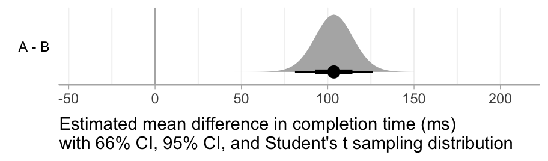
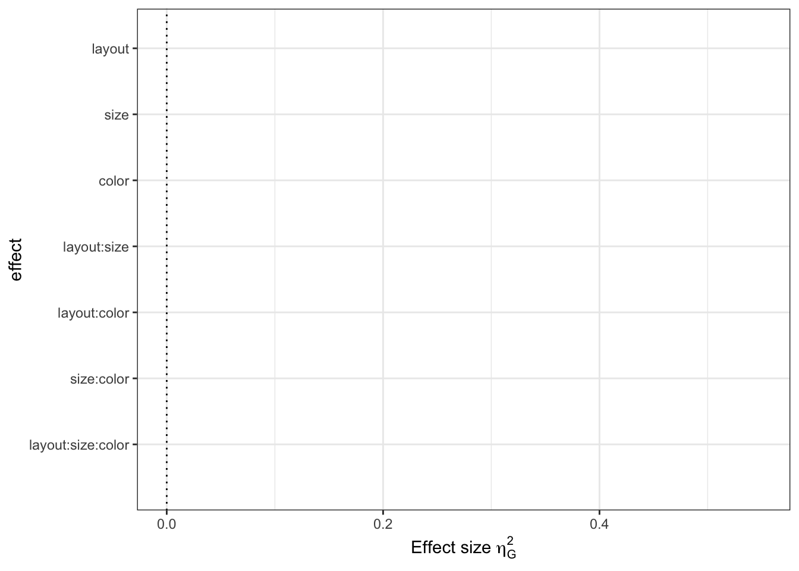

Chapter 2 Effect size

Version: 1.1
Contributed to the writing: Matthew Kay, Chat Wacharamanotham, Steve Haroz, Pierre Dragicevic, Jacob O. Wobbrock, Janne Lindqvist, Yea-Seul Kim, Amelia McNamara
Gave feedback: Fanny Chevalier, Petra Isenberg, Christian Cherek, Hendrik Heuer, Michael McGuffin, Krishna Subramanian, Philipp Wacker, Michael Correll, Jake Hofman, Lewis Chuang, Christian P. Janssen, Jeff Huang, Julie Schiller, Sayamindu Dasgupta, Benjamin Johansen, Gijs Huisman, Florian Echtler, Kai Lukoff, Jennifer Lee Carlson, Nediyana Daskalova, Jennifer J. McGrath, Emanuel Zgraggen
Endorsed:
2.1 FAQ
2.1.1 What is an effect size?
Broadly speaking, an effect size is “anything that might be of interest” (Cumming 2013); it is some quantity that captures the magnitude of the effect studied.
In HCI, common examples of effect size include the mean difference (e.g., in seconds) in task completion times between two techniques (e.g., using a mouse vs. keyboard), or the mean difference in error rates (e.g., in percent). These are called simple effect sizes (or unstandardized effect sizes).
More complex measures of effect size exist called standardized effect sizes (see What is a standardized effect size?). Although the term effect size is often used to refer to standardized effect sizes only, using the term in a broader sense can avoid unnecessary confusion (Cumming 2013; Wilkinson 1999). In this document, “effect size” refers to both simple and standardized effect sizes.
So far, this document covers the effect sizes of the difference between means. There are other types of effect sizes such as correlation as well.
2.1.2 Why and when should effect sizes be reported?
In quantitative experiments, effect sizes are among the most elementary and essential summary statistics that can be reported. Identifying the effect size(s) of interest also allows the researcher to turn a vague research question into a precise, quantitative question (Cumming 2014). For example, if a researcher is interested in showing that their technique is faster than a baseline technique, an appropriate choice of effect size is the mean difference in completion times. The observed effect size will indicate not only the likely direction of the effect (e.g., whether the technique is faster or slower), but also whether the effect is large enough to care about.
For the sake of transparency, effect sizes should always be reported in quantitative research, unless there are good reasons not to do so. According to the American Psychological Association:
For the reader to appreciate the magnitude or importance of a study’s findings, it is almost always necessary to include some measure of effect size in the Results section. (American Psychological Association 2001)
Sometimes, effect sizes can be hard to compute or to interpret. When this is the case, and if the main focus of the study is on the direction (rather than magnitude) of the effect, reporting the results of statistical significance tests without reporting effect sizes (see the inferential statistics FAQ) may be an acceptable option.
2.1.3 How should effect sizes be reported?
The first choice is on whether to report simple effect sizes or standardized effect sizes. For this question, see Should simple effect sizes or standardized effect sizes be reported?
It is rarely sufficient to report an effect size as a single quantity. This is because a single quantity like a difference in means or a Cohen’s d is typically only a point estimate, i.e., it is merely a best guess of the true effect size. It is crucial to also assess and report the statistical uncertainty about this point estimate.
For more on assessing and reporting statistical uncertainty, see the inferential statistics FAQ.
Ideally, an effect size report should include:
- The direction of the effect if applicable (e.g., given a difference between two treatments
AandB, indicate if the measured effect isA - BorB - A). - The type of point estimate reported (e.g., a sample mean difference)
- The type of uncertainty information reported (e.g., a 95% confidence interval, or a credible interval, or the standard deviation, or standard error)
- The units of the effect size if applicable (e.g., taps/minute or completion time in ms), or the type of standardized effect size if it is a unitless effect size.
This information can be reported either numerically or graphically. Both formats are acceptable, although plots tend to be easier to comprehend than numbers when more than one effect size needs to be conveyed (Loftus 1993; Kastellec and Leoni 2007). Unless precise numerical values are important, it is sufficient (and often preferable) to report all effect sizes graphically. Researchers should avoid plotting point estimates without also plotting uncertainty information (using, e.g., error bars).
▸ Exemplar: simple effect size (specifically in the “Reporting simple effect size” sub-section)
2.1.4 What is a standardized effect size?
A standardized effect size is a unitless measure of effect size. The most common measure of standardized effect size is Cohen’s d, where the mean difference is divided by the standard deviation of the pooled observations (Cohen 1988) \(frac{mean difference}{standard deviation}\). Other approaches to standardization exist [prefer citations]. To some extent, standardized effect sizes make it possible to compare different studies in terms of how “impressive” their results are (see How do I know my effect is large enough?); however, this practice is not without criticism (see the section Standardized mean differences let us compare and summarize results when studies use different outcome scales of (Cummings 2011)).
2.1.5 Should simple or standardized effect sizes be reported?
This is a controversial issue. More pointers here
2.1.5.1 Standardized effect sizes
Standardized effect sizes are useful when effects obtained from different experiments and/or expressed in different units need to be combined or compared (Cumming 2014), e.g., a metaanalysis of the literature. However, even this practice is controversial, as it can rely on assumptions about the effects being measured that are difficult to verify (Cummings 2011).
However, interpretations of standardized effect sizes should be accompanied by an argument for its applicability to the domain. If there is no inherent reasoning to argue for a particular interpretation of the practical significance of the standardized effect size, it should be accompanied by another assessment of the practical significance of the effect. Cohen’s rule of thumb for the small, mediuam, and large effect are specific to his domain and has been shown to not generalizable. See What about Cohen’s small, medium, and large effect sizes?
2.1.5.2 Simple effect sizes
Based on the principle of simplicity, simple effect sizes should be preferred over standardized effect sizes:
Only rarely will uncorrected standardized effect size be more useful than simple effect size. It is usually far better to report simple effect size. (Baguley 2009)
Simple effect sizes are often easier to interpret and justify (Cumming 2014; Cummings 2011). When the units of the data are meaningful (e.g., seconds), reporting effect sizes expressed in their original units is more informative and can make it easier to judge whether the effect has a practical significance (Wilkinson 1999; Cummings 2011).
Reporting simple effect sizes also allow future researchers to estimate and interpret variance with Bayesian method. Reporting the simple effect size also consistent with the pinciple of simplicity
▸ Exemplar: simple effect size and standardized effect size
▸ For further discussion about the standardized vs. simple effect sizes, see a blog post: Can we call mean differences “effect sizes”?
2.1.6 How do I know my effect is large enough?
Although there exist rules of thumb to help interpret standardized effect sizes, these are not universally accepted. See What about Cohen’s small, medium, and large effect sizes?
It is generally advisable to avoid the use of arbitrary thresholds when deciding on whether an effect is large enough, and instead try to think of whether the effect is of practical importance. This requires domain knowledge, and often a fair degree of subjective judgment. Ideally, a researcher should think in advance what effect size they would consider to be large enough, and plan the experiment, the hypotheses and the analyses accordingly (see the experiment and analysis planning FAQ).
Nevertheless, more often than not in HCI, it is difficult to determine whether a certain effect is of practical importance. For example, a difference in pointing time of 100 ms between two pointing techniques can be large or small depending on the application, how often it is used, its context of use, etc. In such cases, forcing artificial interpretations of practical importance can hurt transparency. In many cases, it is sufficient to present effect sizes in a clear manner and leave the judgment of practical importance to the reader.
Simple effect sizes provide the information necessary for an expert in the area to use their judgment to assess the practical impact of an effect size. For example, a difference in reaction time of 100ms is above the threshold of human perception, and therefore likely of practical impact. A difference of 100ms in receiving a chat message in an asynchronous chat application is likely less impactful, as it is small compared to the amount of time a chat message is generally expected to take. Presenting simple effect sizes in a clear way—with units—allows the expert author to argue why the effect size may or may not have practical importance and allow the expert reader to make their own judgment.
For the judgement about standardized effect sizes, see the next section.
2.1.7 What about Cohen’s small, medium, and large effect sizes?
Conventional thresholds are sometimes used for standardized effect sizes like Cohen’s d, labeling them “small”, “medium”, or “large”. These thresholds are however largely arbitrary (Cummings 2011). They were originally proposed by Cohen based on human heights and intelligence quotients (Cohen 1977), but Cohen, in the very text where he first introduced them, noted that these thresholds may not be directly applicable to other domains:
The terms “small”, “medium”, and “large” are relative, not only to each other, but to the area of behavioral science or even more particularly to the specific content and research method being employed in any given investigation… In the face of this relativity, there is a certain risk inherent in offering conventional operational definitions for these terms for use in power analysis in as diverse a field of inquiry as behavioral science. This risk is nevertheless accepted in the belief that more is to be gained than lost by supplying a common conventional frame of reference which is recommended for use only when no better basis for estimating the ES index is available. (Cohen 1977)
Cohen recommended the use of these thresholds only when no better frame of reference for assessing practical importance was available. However, hindsight has demonstrated that if such thresholds are offered, they will be adopted as a convenience, often without much thought to how they apply to the domain at hand (Baguley 2004; Lenth 2001); Lenth has called this usage “canned effect sizes” (Lenth 2001). Once adopted, these thresholds make reports more opaque, by standardizing away units of measurement and categorizing results into arbitrary classes. Such classes can even be misleading. For example, a review of 92 experiments shows that effect sizes in software engineering are larger than Cohen’s categories (Kampenes et al. 2007).
Like Cummings (2011), we recommend against assessing the importance of effects by labeling them using Cohen’s thresholds.
2.1.8 How to use effect sizes in planning a study?
See the Experiment and analysis planning FAQ.
2.1.9 What are controversial issues about effect sizes?
- Are effect sizes practical for lab experiments?
- Read about the argument and a response.
- Simple vs. standardized effect sizes: See further disucssion here.
2.2 Exemplar: Simple effect size
This section is in alpha. We welcome help and feedback at all levels! If you would like to contribute, please see Contributing to the Guidelines.
2.2.1 Libraries needed for this analysis
2.2.2 Data
Imagine a between-subjects design, with completion time (in milliseconds) measured in two groups, A and B, with 20 subjects each.
set.seed(12)
n <- 20
data <- tibble(
group = rep(c("A", "B"), each = n),
completion_time_ms = c(
rlnorm(n, meanlog = log(170), sdlog = 0.3),
rlnorm(n, meanlog = log(50), sdlog = 0.4)
)
)We assume a log-normal model of completion times, which is a commonly-used model of completion time (Sauro and Lewis 2010) and ensures completion times are all positive.
A good first step in any analysis is always to visualize the data:
p_data <- # save for the teaser figure
data %>%
ggplot(aes(x = completion_time_ms)) +
geom_dotplot(binwidth=5) +
stat_summaryh(aes(y = 0, xintercept = ..x..), fun.x = mean, geom = "vline", color = "red", linetype = "dashed") +
facet_grid(group ~ ., switch="y") +
scale_y_continuous(breaks = NULL) +
geom_vline(xintercept = 0) +
xlab("Completion time (ms)") +
ylab("Group")
p_data
This plot shows all observed completion times in each group (black dots) along with the mean in each group (dashed red lines).
2.2.3 Calculating simple effect size
Since we have meaningful units (milliseconds), we will use the difference in mean completion time as our effect size. Following our recommendations on how to report effect size, we also need to report the uncertainty around the sample effect size.
There are several possible approaches to estimating the uncertainty in the difference between the two groups. For simplicity, we show one possible approach in this exemplar, but we provide a non-exhaustive comparison of a few other approaches in the effect size guideline appendix.
2.2.4 Difference in means with Student’s t confidence interval
While the response distributions are non-normal, the sampling distribution of the difference in means will still be defined on \((-\infty, +\infty)\) and approximately symmetrical (per the central limit theorem), so we can compute a Student’s t distribution confidence interval for the difference in means.
t_result <-
t.test(completion_time_ms ~ group, data = data) %>%
tidy() # put result in tidy tabular format
t_result| estimate | estimate1 | estimate2 | statistic | p.value | parameter | conf.low | conf.high | method | alternative |
|---|---|---|---|---|---|---|---|---|---|
| 103.6021 | 159.0898 | 55.48774 | 9.388748 | 0 | 28.66574 | 81.02211 | 126.182 | Welch Two Sample t-test | two.sided |
The tidy()ed output of the t.test() function includes an estimate of the mean difference in milliseconds (estimate) as well as the lower (conf.low) and upper (conf.high) bounds of the 95% confidence interval.
95% of all intervals constructed in this manner will contain the “true” (population) value.
A 95% t-confidence interval is therefore a reasonable measure of uncertainty about our measured effect size.
The wider the confidence interval, the less certain we are about what we expect our true effect size to be.
2.2.5 Reporting simple effect size
Ideally, we would have space in our paper to report the effect size graphically:
p_simple_effect_size <- # save for the teaser figure
t_result %>%
ggplot(aes(y = "A - B", x = estimate, xmin = conf.low, xmax = conf.high)) +
geom_pointrangeh() +
geom_vline(xintercept = 0, linetype="dashed") +
xlab("Mean difference in completion time (ms) with 95% CI") +
ylab("")
p_simple_effect_size
This graphical report includes all of the elements of an effect size report that we recommend:
- The direction of the difference (indicated by the label
A - B) - The type of estimate reported (mean difference)
- The type of uncertainty indicated (95% CI)
- The units (ms)
Space may not always permit the graphical report. While it can be less easy to interpret, an alternative is a textual report. Such a report should still include all of the four elements listed above. For example:
Group
Ahad a greater mean completion time than groupBby 104 milliseconds (95% CI: [81, 126]).
2.2.6 Interpreting effect size: same result, different domains = different interpretations
Because simple effect sizes include units, we can use our expert judgment to interpret the report. Authors may wish to do so in order to put their result in context. Because the report above includes everything necessary for other experts to come to their own conclusion, providing our own interpretation does not prevent readers from applying their own judgment and coming to different conclusions.
To illustrate the effect of domain on interpreting effect size, we will imagine two different domains that might have led to the same result reported above, and write a different interpretation of the data for each.
2.2.6.1 Domain 1: Physical prototyping
Imagine the above study was from the comparison of a novel physical user interface prototyping system (treatment B) to the previous state of the art (A), and the completion time referred to the time for feedback to be given to the user after they perform an input action. We might report the following interpretation of the results:
Technique
Boffers a large improvement in feedback time (~81 – 126ms mean decrease), resulting in feedback times that tend to be less than the threshold of human perception (less than about 100ms). By contrast, the larger feedback times offered by techniqueAtended to be above that threshold, possibly degrading users’ experience of the prototypes built using that technique.
2.2.6.2 Domain 2: Chatbots
Imagine the same quantitative results, now in the context of a natural language chat bot designed to answer users’ questions. Here, technique A will be the novel system, with improved natural language capabilities compared to the previous state-of-the-art technique, B. We might report the following interpretation of the results:
While technique
Atakes longer to respond to chat messages (~81–126ms increase in mean response time), we believe this difference is acceptable in the context of an asynchronous chat interface in which users do not expect instantaneous responses. When weighed against the improved natural language capabilites of techniqueA, we believe this small increase in response time for messages is worth the improved message content.
The same effect size is plausibly described as large in domain 1 and small in domain 2, illustrating the importance of expert interpretation to reporting and understanding effect size and the difficulty in applying pre-defined thresholds across domains.
2.3 Exemplar: Within-subjects experiment
This section is in alpha. We welcome help and feedback at all levels! If you would like to contribute, please see Contributing to the Guidelines.
Large individual differences can be a major source of noise. An effective way of accounting for that noise is for every subject to run in every combination of conditions multiple times. This “within-subject” experiment design combined with many repetitions per condition can substantially reduce any noise from individual differences, allowing for more precise measurements despite a small number of subjects.
In this example, we’ll pretend we’ve run an experiment that compared different interfaces for visualizing data. Here are the parameters that we manipulate in the experiment:
- Independent Variable layout: the two layouts of the interface
- Independent Variable size: the size of the dataset visualized (small, medium, and large)
- Independent Variable color: interface color, where we don’t expect any effect
We run each subject through each combination of these variables 20 times to get (2 layouts) × (3 sizes) × (4 colors) × (20 repetitions) = 480 trials per subject. We measure some response (e.g., response time) in each trial.
2.3.1 Libraries needed for this analysis
2.3.2 Simulate a dataset
2.3.2.1 Subjects, conditions, and repetitions
In this example, there are 6 subjects (subject column).
set.seed(543) # make the output consistent
SUBJECT_COUNT = 6
data <- expand.grid(
subject = paste('Subject', LETTERS[1:SUBJECT_COUNT]), # subject IDs
layout = 0:1, # independent variable
size = 0:2, # independent variable
color = 0:3, # independent variable
repetition = 1:20 # each subject runs in each condition multiple times
)
# peak at the data
head(data)| subject | layout | size | color | repetition |
|---|---|---|---|---|
| Subject A | 0 | 0 | 0 | 1 |
| Subject B | 0 | 0 | 0 | 1 |
| Subject C | 0 | 0 | 0 | 1 |
| Subject D | 0 | 0 | 0 | 1 |
| Subject E | 0 | 0 | 0 | 1 |
| Subject F | 0 | 0 | 0 | 1 |
2.3.2.2 Individual differences
Not all subjects behave the same way. Some people might be tired, bad at the task, or just not trying very hard. These performance differences can’t be directly measured, but they can substantially impact the results. We’ll simulate these individual differences by giving each subject a random performance handicap.
2.3.2.3 Simulate some noisy effects
We’ll simulate an experiment with a main effect of layout and size and an interaction between them. However, color and its interactions will not have an impact.
# simulate the response times with a clean model
data <-
data %>%
mutate(
response_time =
layout * .4 + # main effect of layout
size * .2 + # main effect of size
color * 0 +
layout * size * .6 + # 2-way interaction
size * color * 0 +
layout * color * 0 +
layout * size * color * 0
)
# add some reponse noise
data <- data %>% mutate(response_time = response_time + rnorm(n()))
# add noise from individual handicaps
data <- data %>% mutate(response_time = 30 + handicap*2 + response_time * handicap)Even though we used numbers to simulate the model, the independent variables and subject ID are all factors.
2.3.3 A look at the data
Let’s get an overview of the results by graphing each subject’s average response time for each condition.
data %>%
group_by(layout, size, color, subject) %>%
summarize(response_time = mean(response_time)) %>%
ggplot() +
aes(y=response_time, x=size, linetype=layout, color=color,
group=paste(layout,color,subject)) +
geom_line(size=1.5) +
scale_color_brewer(palette='Set1') +
facet_wrap(~subject) +
labs(title='Response times for each subject') +
theme_bw()Despite a lot of variability in raw values between subjects (individual differences), we can see some consistent patterns. The dashed lines are higher (main effect) and more sloped (interaction) than the solid lines. But there doesn’t seem to be any consistent ordering of the colors.
2.3.4 Compute effect sizes
While Cohen’s d is often used for simple 2-factor, single-trial, between-subject designs, repetition skews the measure to be very high. Experiment results with lots of repetition can be more reliably interpreted with the eta squared (\(\eta^{2}\)) family of effect sizes, which represent the proportion of variance accounted for by a particular variable. A variant, generalized eta squared (\(\eta_{G}^{2}\)), is particularly suited for providing comparable effect sizes in both between and within-subject designs (Olejnik and Algina 2003; Bakeman 2005). This property makes it more easily applicable to meta-analyses.
For those accustomed to Cohen’s d, it’s important to be aware that \(\eta_{G}^{2}\) is typically smaller, with a Cohen’s d of 0.2 being equivalent to a \(\eta_{G}^{2}\) of around 0.02. Also, the actual number has little meaning beyond its scale relative to other effects.
results = afex::aov_ez(
data = data,
id = 'subject', # subject id column
dv = 'response_time', # dependent variable
within = c('layout', 'size', 'color'), # within-subject independent variables
between = NULL ,# between-subject independent variables
fun_aggregate = mean, # average multiple repetitions together for each subject*condition
anova_table = list(es = 'ges') # effect size = generalized eta squared
)Note: fun_aggregate = mean collapses repetitions into a mean, which may be a problem if an experiment is not fully counterbalanced. This example, however, has every subject running in every combination of conditions, so simple collapsing is the correct procedure.
anova_results <-
results$anova_table %>%
rownames_to_column('effect') %>% # put effect names in a column
select(-`Pr(>F)`) # no need to show p-values
anova_results %>% as.tibble()| effect | num Df | den Df | MSE | F | ges |
|---|---|---|---|---|---|
| layout | 1 | 5 | 86.61117 | 186.9153824 | 0.5489428 |
| size | 2 | 10 | 51.97262 | 108.2961322 | 0.4583589 |
| color | 3 | 15 | 14.50618 | 0.9125176 | 0.0029764 |
| layout:size | 2 | 10 | 31.84102 | 59.8437233 | 0.2226922 |
| layout:color | 3 | 15 | 19.24758 | 0.1492400 | 0.0006474 |
| size:color | 6 | 30 | 21.02831 | 0.4695047 | 0.0044335 |
| layout:size:color | 6 | 30 | 20.73981 | 1.4065459 | 0.0129870 |
Looking at the F and ges (generalized eta squared) columns, layout and size and the interaction between layout and size account for much more of the noise than color and the other 2-way and 3-way interactions do.
2.3.5 Bootstrapping
Draft. Needs work.
But that only gives us one one point estimate per effect, whereas we want a confidence interval.
We’ll use a technique called bootstrapping, which checks the effect size for many randomized samples of the data. Importantly, bootstrapping samples “with replacement”, meaning that items can be sampled more than once or not at all. If a small subset of the observations are driving an effect, they won’t impact all of the samples. Consequently, the spread of the bootstrapped confidence intervals shows how consistent the results are for different samples.
- Randomly sample with replacement (meaning the same value might be sampled more than once) to build a new dataset
- Perform the analysis on this new dataset
- Do that many times
- Sort the results for each effect and find the 95% confidence interval
2.3.5.1 Prepare for bootstrapping
2.3.5.2 Each iteration
Each iteration of the bootstrap samples the original dataset and runs the analysis on this permutation.
# run one iteration of the bootstrap procedure
analyze_one_iteration <- function(x) {
subjects <- unique(data_aggregated$subject)
# select subjects at random with replacement
sampled_subjects <- sample(subjects, length(subjects), replace=TRUE)
# get all the results for one subject
# and give them a new unique subject id
get_one_subjects_data <- function(i) {
data_aggregated %>%
filter(subject == sampled_subjects[i]) %>%
mutate(subject = paste(sampled_subjects[i], i))
}
# get all of the boostrapped subjects' data
boot_data <- lapply(1:length(sampled_subjects), get_one_subjects_data) %>%
bind_rows()
# compute the effect sizes the same way we did without bootstrapping
afex::aov_ez(
data = boot_data,
id = 'subject', # subject id column
dv = 'response_time', # dependent variable
within = c('layout', 'size', 'color'), # within-subject independent variables
between = NULL ,# between-subject independent variables
#fun_aggregate = mean,
anova_table = list(es = 'ges') # effect size = generalized eta squared
)$anova_table %>%
as.tibble() %>%
rownames_to_column('effect') %>% # put effect names in a column
return()
}2.3.5.3 Iterate
The bootstrap needs to run many times to determine how a subset of the data impacts
2.3.5.4 Parallelize
Bootstrapping can be slow, especially with thousands of iterations. Splitting the iterations across processor cores cuts down on the wait time.
BOOTSTRAP_COUNT <- 100 # at least 5k recommended. Use lower values for quicker testing.
# Initiate cluster
core_count <- detectCores() - 1
core_count <- ifelse(core_count < 1, 1, core_count)
my_cluster <- makeCluster(core_count)
# make sure each core in the cluster defines these functions
clusterExport(my_cluster, "analyze_one_iteration")
clusterExport(my_cluster, "data_aggregated")
# how many times should each core iterate
bootstrap_iteration_count <- BOOTSTRAP_COUNT / core_count
# run the bootstrap and output the time
system.time(
boot_results <- parLapply(
my_cluster, # the cluster of cores
rep(bootstrap_iteration_count, core_count), # how many runs for each core
analyze_many_iterations) # the function to run in each core
)## user system elapsed
## 0.002 0.001 8.5802.3.6 Getting a confidence interval from a bootstrap
Each bootstrap iterations ran one anaylsis, so wwe now have many results. So for each effect size, we sort the results and find the range of the inner 95% percentiles.
# inner 95%
PERCENTILE_LO <- 0.025
PERCENTILE_HI <- 0.975
# put all the boostraped results together
boot_results <- bind_rows(boot_results)
boot_results <-
boot_results %>%
group_by(effect) %>%
summarize(
effectsize_conf_low = unname(quantile(ges, probs = PERCENTILE_LO)),
effectsize_conf_high = unname(quantile(ges, probs = PERCENTILE_HI)))
# add the low and hi end estimates to the effect size table
anova_results <-
anova_results %>%
left_join(boot_results, by = 'effect')
# show the table
anova_results %>% as.tibble()| effect | num Df | den Df | MSE | F | ges | effectsize_conf_low | effectsize_conf_high |
|---|---|---|---|---|---|---|---|
| layout | 1 | 5 | 86.61117 | 186.9153824 | 0.5489428 | 0.4204160 | 0.8648450 |
| size | 2 | 10 | 51.97262 | 108.2961322 | 0.4583589 | 0.3498418 | 0.8116639 |
| color | 3 | 15 | 14.50618 | 0.9125176 | 0.0029764 | 0.0010121 | 0.0500429 |
| layout:size | 2 | 10 | 31.84102 | 59.8437233 | 0.2226922 | 0.1355233 | 0.5439404 |
| layout:color | 3 | 15 | 19.24758 | 0.1492400 | 0.0006474 | 0.0002416 | 0.0838645 |
| size:color | 6 | 30 | 21.02831 | 0.4695047 | 0.0044335 | 0.0024160 | 0.1292213 |
| layout:size:color | 6 | 30 | 20.73981 | 1.4065459 | 0.0129870 | 0.0073052 | 0.1311094 |
2.3.7 Plot the effect sizes
anova_results %>%
# reverse order the factors so that they appear in proper order in the plot
mutate(effect = fct_rev(fct_inorder(effect))) %>%
# plot and mapping
ggplot(aes(x = effect, y = ges, ymin = effectsize_conf_low, ymax = effectsize_conf_high)) +
# reference line of no-effect
geom_hline(yintercept = 0, linetype = 'dotted') +
# point- and interval-estimates
geom_pointrange() +
# ensures that we see the reference line
expand_limits(x = 0) +
# labels
labs(y = expression(paste('Effect size ', eta[G]^2))) +
# flip to horizontal plot and apply black-and-white theme
coord_flip() +
theme_bw()
2.3.8 Reporting the results
Generalized eta squared (GES) represents the proportion of variance in the results explained by each variable. The previous graph shows clear main effects for layout and size and an interaction between layout and size. However color and the other 2-way and 3-way interactions are relatively much smaller, barely above zero. There is no useful cutoff for what counts as a “significant” effect, so think in terms of relative size – which variables best explain the variance in the results?
Strong effects:
- layout: F1,5 = 187, \(\eta_{G}^{2}\) = 0.549 95% CI [0.42, 0.865]
- size: F2,10 = 108, \(\eta_{G}^{2}\) = 0.458 95% CI [0.35, 0.812]
- layout × size: F2,10 = 59.8, \(\eta_{G}^{2}\) = 0.223 95% CI [0.136, 0.544]
Minimally impactful:
- color F3,15 = 0.913, \(\eta_{G}^{2}\) = 0.00298 95% CI [0.00101, 0.05]
- layout × color: F3,15 = 0.149, \(\eta_{G}^{2}\) = 0.000647 95% CI [0.000242, 0.0839]
- size × color: F6,30 = 0.47, \(\eta_{G}^{2}\) = 0.00443 95% CI [0.00242, 0.129]
- layout × size × color: F6,30 = 1.41, \(\eta_{G}^{2}\) = 0.013 95% CI [0.00731, 0.131]
2.4 Exemplar: Standardized effect size
This section is in alpha. We welcome help and feedback at all levels! If you would like to contribute, please see Contributing to the Guidelines.
TODO: This needs a domain where we can argue that Cohen's d is an exemplar analysis, then repeat structure of exemplar 1 with it
May be an example of existing meta-analysis in HCI.2.4.1 Libraries needed for this analysis
2.4.2 Standardized effect size
set.seed(12)
n <- 20
data <- tibble(
group = rep(c("A", "B"), each = n),
completion_time_ms = c(
rlnorm(n, meanlog = log(170), sdlog = 0.3),
rlnorm(n, meanlog = log(50), sdlog = 0.4)
)
)cohen_d <- cohen.d(completion_time_ms ~ group, data = data)
# manual calculation
data_A <- (data %>% filter(group == "A"))[["completion_time_ms"]]
data_B <- (data %>% filter(group == "B"))[["completion_time_ms"]]
sd_A <- sd(data_A)
sd_B <- sd(data_B)
sd_pool <- sqrt( (sd_A^2 + sd_B^2) / 2 )
cohen_d_manual <- abs(mean(data_A) - mean(data_B))/sd_poolStandardized effect size: Cohen’s d = 2.97 SDs with 95% confidence interval [2.04 , 3.90]
2.5 Exemplar: Nonparametric effect size
This section is in alpha. We welcome help and feedback at all levels! If you would like to contribute, please see Contributing to the Guidelines.
For a nonparametric test that produces a Z-score, like the Mann-Whitney U test or the Wilcoxon Signed-Rank test, an effect size can be computed as:
Above, Z is the Z-score and N is the number of observations in all groups [Rosenthal (1991), p. 19). The result, r, is a variance-based effect size, like Pearson r, not a Cohen d-family effect size. The r can be squared to estimate the percentage of variance explained, however it will not be exactly equivalent to the Pearson r.
TODO: This needs a domain where we can argue that the nonparametric approach is an exemplar analysis, then repeat structure of exemplar 1 with it2.5.1 Libraries needed for this analysis
2.5.2 Nonparametric effect size
set.seed(12)
n <- 20
data <- tibble(
group = rep(c("A", "B"), each = n),
completion_time_ms = c(
rlnorm(n, meanlog = log(170), sdlog = 0.3),
rlnorm(n, meanlog = log(50), sdlog = 0.4)
)
)data_A <- (data %>% filter(group == "A"))[["completion_time_ms"]]
data_B <- (data %>% filter(group == "B"))[["completion_time_ms"]]
wilcox_result <- wilcox_test(completion_time_ms ~ factor(group), data = data)
effect_r <- abs(wilcox_result@statistic@teststatistic / sqrt(nrow(data)))Non-parametric effect size: Variance-based effect size r = 0.84.
References
Cumming, Geoff. 2013. Understanding the New Statistics: Effect Sizes, Confidence Intervals, and Meta-Analysis. Routledge.
Wilkinson, Leland. 1999. “Statistical Methods in Psychology Journals: Guidelines and Explanations.” American Psychologist 54 (8). American Psychological Association: 594.
Cumming, Geoff. 2014. “The New Statistics: Why and How.” Psychological Science 25 (1): 7–29. https://doi.org/10.1177/0956797613504966.
American Psychological Association. 2001. Publication Manual of the American Psychological Association. 5th Edition.
Loftus, Geoffrey R. 1993. “A Picture Is Worth a Thousand P Values: On the Irrelevance of Hypothesis Testing in the Microcomputer Age.” Behavior Research Methods, Instruments, & Computers 25 (2). Springer: 250–56. https://faculty.washington.edu/gloftus/Research/Publications/Manuscript.pdf/Loftus%20p-values%201993.pdf.
Kastellec, Jonathan P, and Eduardo L Leoni. 2007. “Using Graphs Instead of Tables in Political Science.” Perspectives on Politics 5 (04). Cambridge Univ Press: 755–71.
Cohen, Jacob. 1988. Statistical Power Analysis for the Behavioral Sciences. Lawrence Earlbaum Associates.
Cummings, Peter. 2011. “Arguments for and Against Standardized Mean Differences (Effect Sizes).” Archives of Pediatrics & Adolescent Medicine 165 (7): 592. https://doi.org/10.1001/archpediatrics.2011.97.
Baguley, Thom. 2009. “Standardized or simple effect size: what should be reported?” British Journal of Psychology 100 (3): 603–17. https://doi.org/10.1348/000712608X377117.
Cohen, Jacob. 1977. “The t Test for Means.” In Statistical Power Analysis for the Behavioral Sciences, Revised Ed, 19–74. Academic Press. https://doi.org/10.1016/B978-0-12-179060-8.50007-4.
Baguley, Thom. 2004. “Understanding statistical power in the context of applied research.” Applied Ergonomics 35 (2): 73–80. https://doi.org/10.1016/j.apergo.2004.01.002.
Lenth, Russel V. 2001. “Some practical guidelines for effective sample size determination.” The American Statistician 55 (3): 187–93. https://doi.org/10.1198/000313001317098149.
Kampenes, Vigdis By, Tore Dybå, Jo E. Hannay, and Dag I.K. Sjøberg. 2007. “A Systematic Review of Effect Size in Software Engineering Experiments.” Information and Software Technology 49 (11): 1073–86. https://doi.org/https://doi.org/10.1016/j.infsof.2007.02.015.
Sauro, Jeff, and James R. Lewis. 2010. “Average task times in usability tests.” Proceedings of the 28th International Conference on Human Factors in Computing Systems - CHI ’10. https://doi.org/10.1145/1753326.1753679.
Olejnik, Stephen, and James Algina. 2003. “Generalized Eta and Omega Squared Statistics: Measures of Effect Size for Some Common Research Designs.” Psychological Methods.
Bakeman, Roger. 2005. “Recommended Effect Size Statistics for Repeated Measures Designs.” Behavior Research Methods.
Rosenthal, Robert. 1991. Meta-Analytic Procedures for Social Research. Vol. 6. Sage.